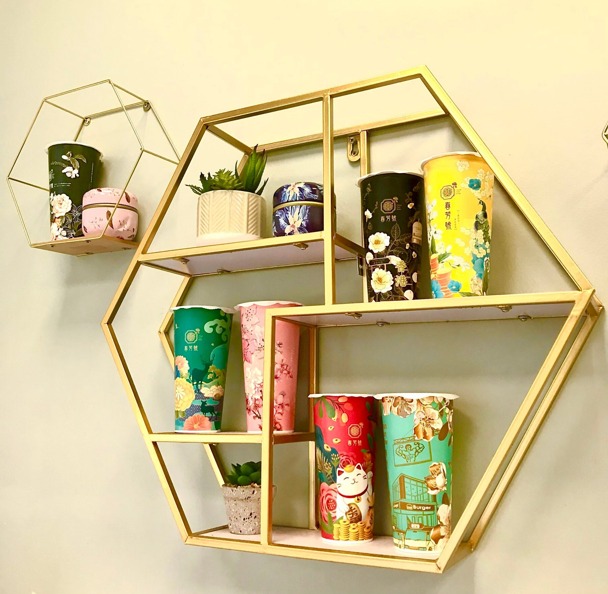
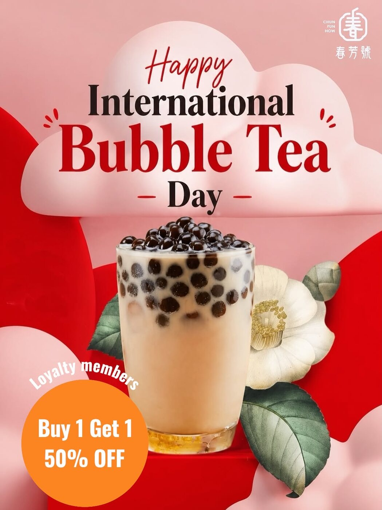
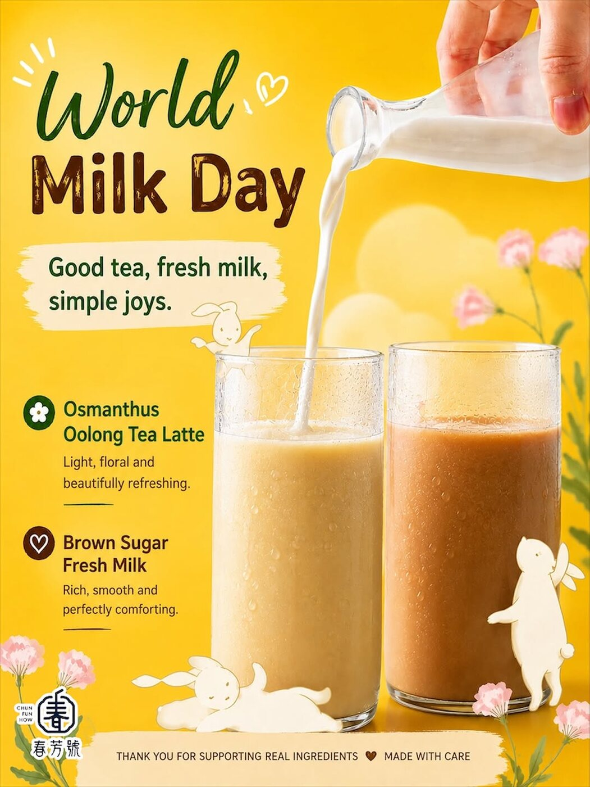
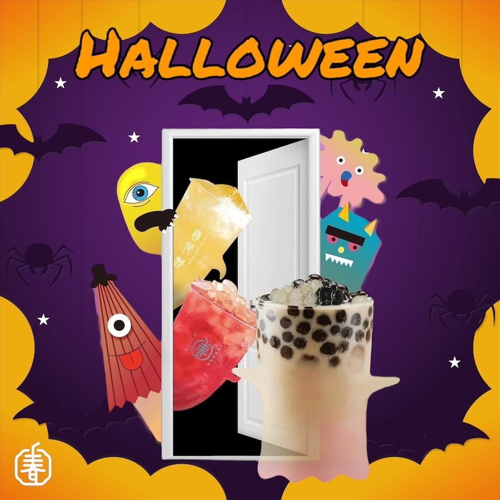
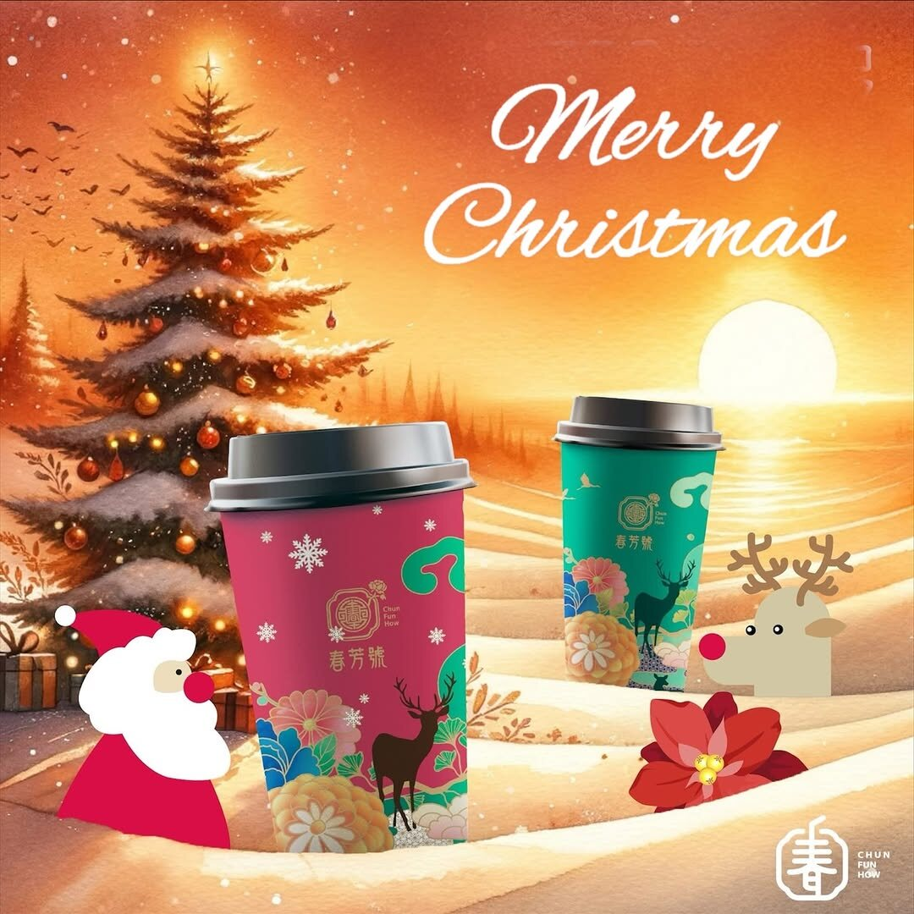
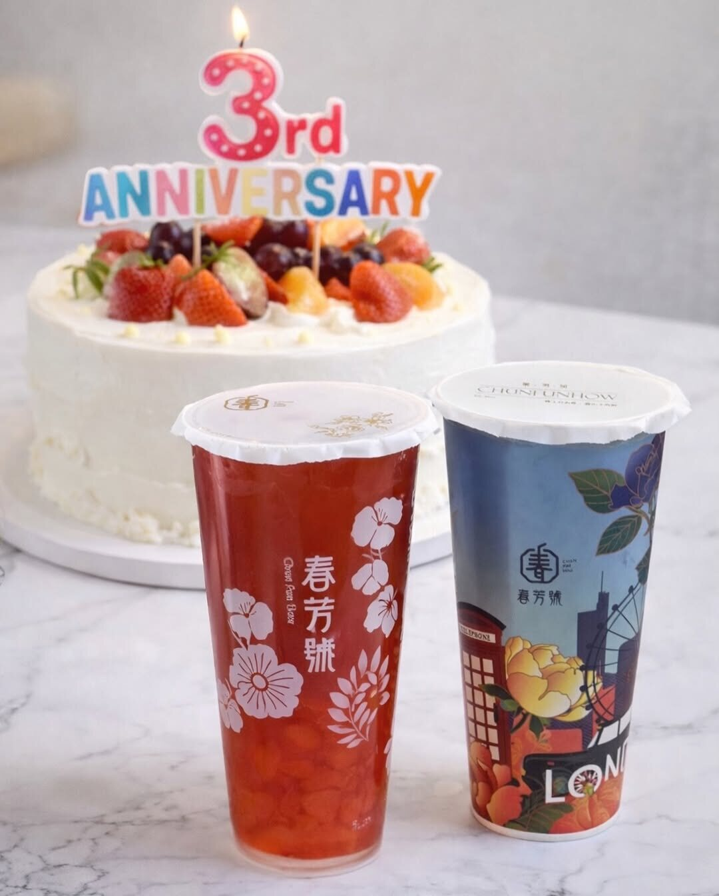

A shop named for spring
Chun Fun How started in Taiwan in 2014 and opened its first UK shop here in Victoria. This is what the name means, where the tea comes from and why the cups look the way they do.
Three characters over the door
Read them top to bottom on our sign, the way a Taiwanese shopfront is written.
Spring
The season tea bushes wake up. It is also the character inside our logo, drawn with a straw through the top.
Fragrance
The scent of flowers and of good leaves in hot water. Osmanthus, rose and jasmine all find their way into the menu.
A trading house
The old word that closes the name of a family shop. It tells you this is a place with a counter and a reputation to keep.

From Taiwan to Artillery Row
- 2014Chun Fun How opens in Taiwan, pairing carefully sourced tea with cups illustrated like botanical prints.
- Across Asia and beyondShops follow in Hong Kong, Singapore, Indonesia and Canada, and cities such as Hong Kong and Singapore get a cup of their own.
- 2023The UK becomes the sixth market. The London flagship opens at 5 Artillery Row, Victoria, with ingredients imported directly from Taiwan.
- TodayA second London shop pours in Earl's Court, and London has a cup of its own with a phone box and the Eye.
A small glossary of what is in the cup
The words you will see on our menu, in Chinese and in English.
Why the cups are covered in flowers
Peonies, camellias, cherry blossom, a peacock, a pair of deer. The cups borrow from the painted tins and printed fabrics of old Taiwanese tea shops.
Each drink is sealed under film rather than a lid, the Taiwanese way, so it travels without spilling. New designs arrive with festivals and with each new city, and regulars collect them.
See the cup gallery
A year at the shop
Taiwanese festivals and London ones, each with its own poster and often its own cup.








Taste it for yourself
Start with the Lychee Jade Tea with aloe vera. It sits at No. 1 on our bestseller board.